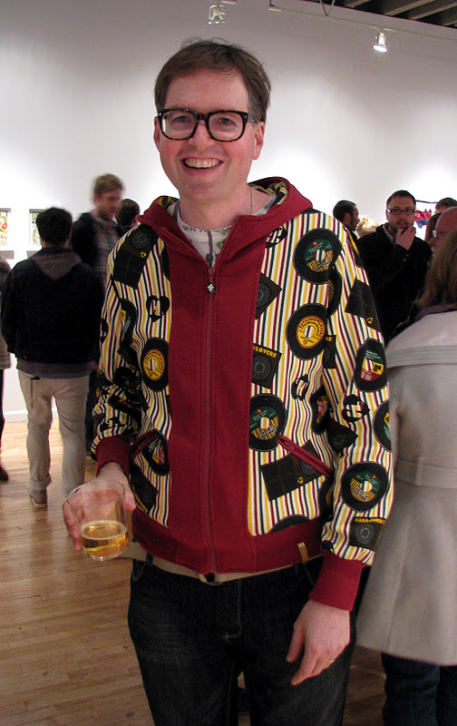

 Jason Mclean Brooklyn based Canadian artist, Jason McLean was born in London, ON in 1971. After attending H.B. Beal Secondary School, McLean graduated from the Emily Carr Institute of Art and Design, Vancouver in 1997. Since 1994, Jason McLean has exhibited worldwide, including shows at the Vancouver Art Gallery, Art Gallery of Alberta, MOCA Toronto, Fondazione Bevilacqua La Masa in Venice, Mother’s Tankstation in Dublin, Ireland, Loyal Gallery in Malmo, Sweden, Modern Art Museum in Henningsvær, Norway, Berry Campbell Gallery in New York, and Bravin Lee Programs in New York, Jason McLean has work in major collections throughout North America including the Museum of Modern Art in New York, National Gallery of Canada, Vancouver Art Gallery, BMO Collection, TD Bank and the Royal Bank of Canada. His drawings, paintings and sculptures are idiosyncratic visual records of his experiences, observations and perceptions. His frenetic artworks include rich annotations and carefully-researched fragments of personal and social histories. McLean’s drawings act as diaries that pictorially represent his relationship with local environments. His works are often described as mental maps, where samplings of his daily observations are mashed-up into antiheroic, yet poignant combinations. Working in this way, McLean uses humour to touch upon challenging subject matter, such as sadness, loss, displacement, mental illness and economic hardship. McLean is represented by Michael Gibson Gallery in London, Canada, Mónica Reyes Gallery in Vancouver, Canada, Van Der Plas Gallery in New York, NY, and Wilding Cran Gallery in Los Angeles, CA.